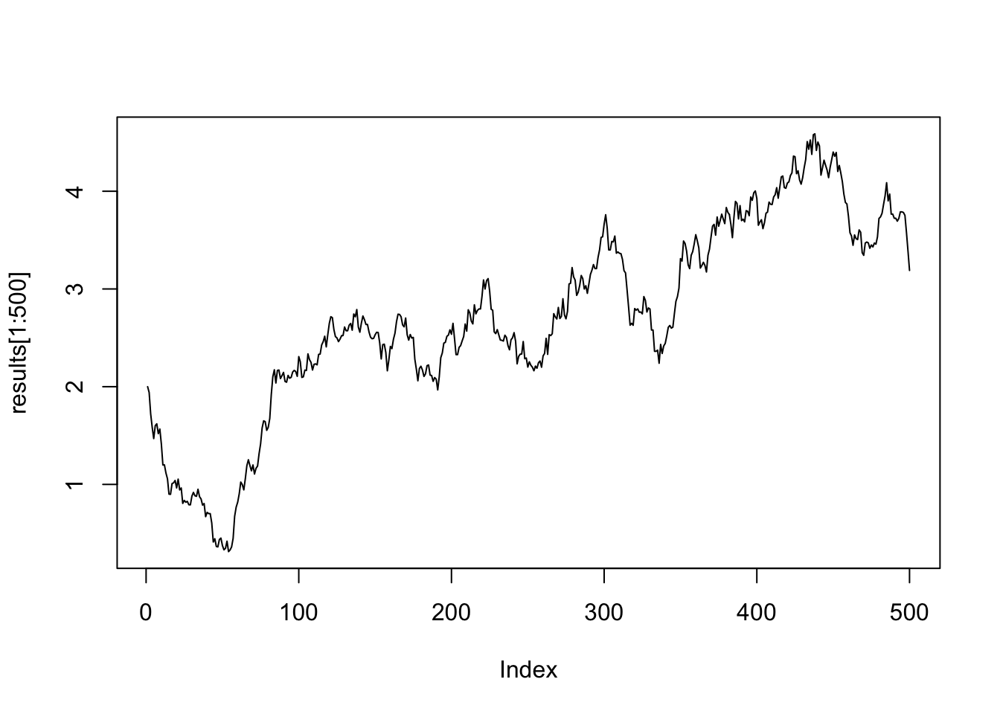

P <- rbind(c(0.91, 0.09), c(0.12, 0.88))
w <- c(4/7, 3/7)Stats 102C, Homework 4 - Intro to MCMC
Homework Questions, copyright Miles Chen. Do not post or distribute without permission.
Do not post your solutions online on a site like github. Violations will be reported to the Dean of Students.
Modify this file with your answers and responses.
Academic Integrity Statement
By including this statement, I, Amaeya Deshpande, declare that all of the work in this assignment is my own original work. At no time did I look at the code of other students nor did I search for code solutions online. I understand that plagiarism on any single part of this assignment will result in a 0 for the entire assignment and that I will be referred to the dean of students.
Reading:
Reading is important!
Doing Bayesian Data Analysis Textbook is available at: https://www.sciencedirect.com/science/book/9780124058880
- Read chapter 7 of Doing Bayesian Data Analysis
- http://setosa.io/ev/markov-chains/
- http://setosa.io/ev/eigenvectors-and-eigenvalues/ Especially the section on steady states (stationary distributions)
Problem 1 - Transition Matrix and Stationary Distribution (Two state case)
Imagine a two-state Markov chain. With state 1 representing CA and state 2 representing TX.
Let’s pretend that each year, 9% of Californians move to TX and that 12% of Texans move to CA.
Create and display a 2x2 transition matrix \(\mathbb{P}\) in R to represent the transition probabilities.
Using algebra, find the stationary distribution \(\boldsymbol{\pi}\), so that \(\boldsymbol{\pi}\mathbb{P} = \boldsymbol{\pi}\).
We can use algebra to find the stationary distribution by creating a system of equations:
0.91w1 + 0.12w2 = w1 0.09w1 + 0.88w2 = w2 -> 0.09w1 = 0.12w2 -> w2 = 0.75w1
We also know that w1 + w2 = 1 so…
0.91w1 + 0.12(0.75w1) + 0.09w1 + 0.88(0.75w1) = 1 -> 1.75w1 = 1
When we divide, we get w1 = 4/7 so knowing that w1 + w2 = 1, we get that w2 = 3/7
Find the left eigenvector of \(\mathbb{P}\) and normalize it (so it sums to 1). Does it match the stationary distribution you found?
eig_vectors <- eigen(t(P))$vectors
stationary <- t(eig_vectors[,1])
stationary / (sum(stationary)) [,1] [,2]
[1,] 0.5714286 0.4285714Yes, this matches the stationary distribution found using algebra.
Problem 2 - Transition Matrix and Stationary Distribution (island example)
Look at the example with the politician visiting the island chain in chapter 7 of the textbook, Doing Bayesian Data Analysis. Also see Lecture 5-3.
Imagine another chain of 7 islands where the target distribution is equal to the probabilities of a binomial distribution with n = 6 and p = 0.6.
This ‘nation’ has 7 islands in a chain numbered from 0 to 6. Island 0 has prob = \(\binom{6}{0}(.6)^0(.4)^6\) = dbinom(0, 6, 0.6), Island 1 has prob = \(\binom{6}{1}(.6)^1(.4)^5\) = dbinom(1, 6, 0.6), Island 6 has prob = dbinom(6, 6, 0.6), etc.
Use the same algorithm as the politician to figure out the transition probabilities. Create and print out the full 7 x 7 transition matrix \(\mathbb{P}\). Populate the matrix with actual decimal values, and not symbols (round to 4 decimal places for display purposes).
Start with the initial distribution: \(\boldsymbol{\pi}^{(1)}\) = c(0, 0, 0, 1, 0, 0, 0)
Multiply \(\boldsymbol{\pi}^{(n)}\) by \(\mathbb{P}\) 6 times and print the results after each iteration. (Print the distribution of \(\boldsymbol{\pi}^{(2)}\), \(\boldsymbol{\pi}^{(3)}\), … \(\boldsymbol{\pi}^{(7)}\))
Find the stationary distribution of the chain by finding the left eigenvector of the transition matrix and normalizing it. Check (using all.equal()) to see if it is equal to the target distribution (a binomial distribution with \(n = 6\) and \(p = 0.6\))
target <- dbinom(0:6, 6, 0.6)
P <- matrix(rep(0, 49), nrow = 7)
for (i in 1:7) {
if (i < 7) {
if (target[i] < target[i + 1]) {
P[i, i + 1] <- 0.5
}
else {
P[i, i + 1] <- 0.5 * (target[i + 1] / target[i])
}
}
if (i > 1) {
if (target[i] < target[i - 1]) {
P[i, i - 1] <- 0.5
}
else {
P[i, i - 1] <- 0.5 * (target[i - 1] / target[i])
}
}
P[i, i] <- 1 - sum(P[i,])
}
round(P, 4) [,1] [,2] [,3] [,4] [,5] [,6] [,7]
[1,] 0.5000 0.5000 0.0000 0.0000 0.0000 0.000 0.000
[2,] 0.0556 0.4444 0.5000 0.0000 0.0000 0.000 0.000
[3,] 0.0000 0.1333 0.3667 0.5000 0.0000 0.000 0.000
[4,] 0.0000 0.0000 0.2500 0.2500 0.5000 0.000 0.000
[5,] 0.0000 0.0000 0.0000 0.4444 0.2556 0.300 0.000
[6,] 0.0000 0.0000 0.0000 0.0000 0.5000 0.375 0.125
[7,] 0.0000 0.0000 0.0000 0.0000 0.0000 0.500 0.500pi_1 = c(0, 0, 0, 1, 0, 0, 0)
pi_curr <- pi_1
for (i in 2:7) {
pi_next <- pi_curr %*% P
print(round(pi_next, 4))
pi_curr <- pi_next
} [,1] [,2] [,3] [,4] [,5] [,6] [,7]
[1,] 0 0 0.25 0.25 0.5 0 0
[,1] [,2] [,3] [,4] [,5] [,6] [,7]
[1,] 0 0.0333 0.1542 0.4097 0.2528 0.15 0
[,1] [,2] [,3] [,4] [,5] [,6] [,7]
[1,] 0.0019 0.0354 0.1756 0.2919 0.3445 0.1321 0.0187
[,1] [,2] [,3] [,4] [,5] [,6] [,7]
[1,] 0.0029 0.0401 0.155 0.3139 0.3 0.1622 0.0259
[,1] [,2] [,3] [,4] [,5] [,6] [,7]
[1,] 0.0037 0.0399 0.1553 0.2893 0.3147 0.1638 0.0332
[,1] [,2] [,3] [,4] [,5] [,6] [,7]
[1,] 0.0041 0.0403 0.1493 0.2899 0.307 0.1724 0.0371eig_vectors <- eigen(t(P))$vectors
stationary <- t(eig_vectors[,1])
stationary <- as.vector(stationary / (sum(stationary)))
all.equal(target, stationary)[1] TRUEMultiply \(\boldsymbol{\pi}^{(1)}\) by \(\mathbb{P}\) 500 times to get \(\boldsymbol{\pi}^{(501)}\). Show the results after the final iteration. Do NOT show the steps in between. Did the distribution converge to the stationary distribution?
pi_curr <- pi_1
pi_next <- pi_1
for (i in 2:500) {
pi_next <- pi_curr %*% P
pi_curr <- pi_next
}
print(round(pi_next, 4)) [,1] [,2] [,3] [,4] [,5] [,6] [,7]
[1,] 0.0041 0.0369 0.1382 0.2765 0.311 0.1866 0.0467The distribution does converge towards the stationary distribution. The values are not identical, but they are very similar.
Problem 3 - MCMC (Metropolis Algorithm) for the island hopping
Write code to create a Markov chain using the Metropolis Algorithm for the same island nation in problem 2.
target <- function(x){
ifelse(x %in% 0:6, dbinom(x, 6, 0.6), 0)
}
propose <- function(x) {
current + sample(c(1, -1), size = 1)
}
n <- 10^5
results1 <- c(0, rep(NA, n - 1))
set.seed(1)
for (t in 1:(n-1)) {
current <- results1[t]
proposed <- propose(current)
pmove <- target(proposed) / target(current)
u <- runif(1)
if(u < pmove) {
results1[t + 1] <- proposed
} else {
results1[t + 1] <- current
}
}
counts <- table(results1)
res <- rbind(counts/n , dbinom(0:6, 6, 0.6))
rownames(res) <- c("empirical", "target")
barplot(res, beside = TRUE, legend.text = row.names(res),
args.legend = list(x = 7))chisq.test(counts, p = dbinom(0:6, 6, 0.6))
Chi-squared test for given probabilities
data: counts
X-squared = 17.037, df = 6, p-value = 0.009149While it is not strongly reflected in the barplot, the chi-squared goodness-of-fit test with p-value less than 0.05 provides evidence to say that the values produced by the Markov chain do not come from the target distribution.
results2 <- c(6, rep(NA, n - 1))
set.seed(2)
for (t in 1:(n-1)) {
current <- results2[t]
proposed <- propose(current)
pmove <- target(proposed) / target(current)
u <- runif(1)
if(u < pmove) {
results2[t + 1] <- proposed
} else {
results2[t + 1] <- current
}
}
counts <- table(results2)
res <- rbind(counts/n , dbinom(0:6, 6, 0.6))
rownames(res) <- c("empirical", "target")
barplot(res, beside = TRUE, legend.text = row.names(res),
args.legend = list(x = 7))chisq.test(counts, p = dbinom(0:6, 6, 0.6))
Chi-squared test for given probabilities
data: counts
X-squared = 6.9061, df = 6, p-value = 0.3296Based on the barplot and the chi-squared goodness-of-fit test with p-value greater than 0.05, we do not have enough evidence to say that the values produced by the Markov chain do not come from the target distribution.
Run the Metropolis Algorithm to create two Markov chains, each of length 10^5. For the first chain, start at x = 0 and use set.seed(1). For the second, start at x = 6 and use set.seed(2).
For each completed chain, print out a table of the resulting relative frequencies. Make a side-by-side barchart that shows the empirical PMF of your data and the theoretic PMF according to the binomial distribution. Use a chi-squared goodness-of-fit test to see if the generated values fit the expected probabilities. Be sure to comment on the graph and results of the test.
Problem 4 - MCMC (Metropolis Algorithm) for a single continuous random variable
The logisitic distribution is a unimodal and symmetric distribution, where the CDF is a logistic curve. The shape is similar to a normal distribution, but has heavier tails (though not as heavy as a Cauchy distribution).
We will compare Rejection Sampling to the Metropolis Algorithm for producing a sample from a distribution.
The PDF is:
\[f(x; \mu, s) = \frac{1}{s} \frac{e^{-(\frac{x-\mu}{s})} }{\left( 1 + e^{-(\frac{x-\mu}{s})} \right)^2}\]
Luckily, this is implemented for us in R with dlogis(), which you are allowed to use to calculate the probability density of a (proposed) value.
We will generate two samples drawn from a logistic distribution with mean = 0 and scale = 1.
\[f(x; \mu = 0, s=1) = \frac{e^{-x} }{\left( 1 + e^{-x} \right)^2} = \texttt{dlogis(x)}\]
Task 4A:
First generate a sample from the logistic distribution using rejection sampling. Propose 10^5 values from a random uniform distribution from -20 to 20. Calculate the necessary constant M, and implement rejection sampling. If you propose 10^5 values, how many values do you end up accepting?
Plot the theoretic CDF of the distribution. Add the empirical CDF of your accepted values to the same plot (in a different color). Use the Kolmogorov-Smirnov test to compare your generated samples to the theoretic distributions.
set.seed(4)
n <- 10^5
proposed <- runif(n, -20, 20)
f <- function(x) { dlogis(x) }
g <- function(x) { 1/40 }
M <- f(0) / g(0)
r_x <- f(proposed) / (M * g(proposed))
u <- runif(n)
accept <- u < r_x
accepted_vals <- proposed[accept]
print(paste("Number of values accepted:", length(accepted_vals)))[1] "Number of values accepted: 9999"t_cdf <- function(x) { plogis(x) }
e_cdf <- ecdf(accepted_vals)
curve(t_cdf(x), from = -10, to = 10, col = "black", lwd = 2,
ylab = "CDF")
lines(e_cdf, col = "blue")
legend("topleft", legend = c("Theoretical CDF", "Empirical CDF"),
col = c("black", "blue"), lwd = 1)ks.test(accepted_vals, plogis)
Asymptotic one-sample Kolmogorov-Smirnov test
data: accepted_vals
D = 0.0069769, p-value = 0.7151
alternative hypothesis: two-sidedTask 4B:
Use the Metropolis algorithm to generate values from the logisitic distribution.
For your proposal distribution, use a random uniform distribution that draws a random value between \(X_{current} - 1\) and \(X_{current} + 1\).
As a reminder, the steps of the algorithm are as follows:
- Propose a single value from the proposal distribution.
- Calculate the probability of moving = min(1, P(proposed)/P(current))
- Draw a random value to decide if you will move or not. If you move, update the current position. If you do not move, keep the current position for another iteration.
- Repeat.
Start at the terrible location \(x^{(1)} = -19\).
Run the Markov Chain for 10,000 iterations. Plot the first 1000 values of the chain and eyeball where you think the chain starts has finished ‘burning-in’ and is now drawing values from the target distribution. Throw away those initial values.
Plot a density histogram of the remaining values and add the density of the logistic distribution to the histogram.
Plot the theoretic CDF of the distribution. Add the empirical CDF of your values (after removing burn-in) to the same plot. Use the Kolmogorov-Smirnov test to compare your generated samples to the theoretic distributions.
set.seed(10)
target <- function(x) {
dlogis(x)
}
propose <- function(x) {
runif(1, x - 1, x + 1)
}
results <- rep(NA, 10^4)
results[1] <- -19
for(i in 1:(10^4 - 1)){
current <- results[i]
proposed <- propose(current)
p_move <- min(1, target(proposed) / target(current))
results[i + 1] <- ifelse(runif(1) < p_move, proposed, current)
}
plot(results[1:1000], type = "l")kept_vals <- results[-(1:150)]
hist(kept_vals, probability = TRUE, breaks = 30)
curve(dlogis(x), add = TRUE, col = "blue", lwd = 2)t_cdf <- function(x) { plogis(x) }
e_cdf <- ecdf(kept_vals)
curve(t_cdf(x), from = -10, to = 10, col = "black", lwd = 2,
ylab = "CDF")
lines(e_cdf, col = "blue")
legend("topleft", legend = c("Theoretical CDF", "Empirical CDF"),
col = c("black", "blue"), lwd = 1)ks.test(kept_vals, plogis)Warning in ks.test.default(kept_vals, plogis): ties should not be present for
the Kolmogorov-Smirnov test
Asymptotic one-sample Kolmogorov-Smirnov test
data: kept_vals
D = 0.008648, p-value = 0.4528
alternative hypothesis: two-sidedProblem 5 - MCMC - the effect of sigma in the proposal distribution
Write code to perform 50,000 iterations of the Metropolis Algorithm for a single continuous random variable.
Let the PDF of the target distribution be:
\[f(x) = c \cdot ( sin(x) + 2 )\]
for \(0 \le x \le 3 * \pi\), where c is some constant so that \(\int_0^{3\pi} f(x) dx = 1\).
For your proposal distribution, use a normal distribution, centered at the current value, with a standard deviation of \(\sigma\), which we will adjust in this problem.
Begin your Markov Chain at the location x = 2.
Keep in mind that the probability of a value greater than \(3 \pi\) or less than 0 is 0.
Gather 50,000 samples using MCMC three different times.
The first time, use a sigma of 0.1 for the proposal distribution.
The second time, use a sigma of 2.5 for the proposal distribution.
The third time, use a sigma = 20.
Keep track of whether your proposed values are accepted or rejected, and print out the acceptance ratio.
For each MCMC run, print out the acceptance ratio, create a histogram of the sampled values, and plot the first 500 values of the chain plot(x[1:500], type = "l").
set.seed(11)
c <- 1 / integrate(function(x) {sin(x) + 2}, 0, 3 * pi)$value
f <- function(x) {
ifelse(x < 0 || x > 3 * pi, 0, c * (sin(x) + 2))
}
n <- 50000
results <- rep(NA, n)
results[1] <- 2
accepted <- 0
for(i in 1:(10^4 - 1)){
current <- results[i]
proposed <- rnorm(1, current, 0.1)
p_move <- min(1, f(proposed) / f(current))
if (runif(1) < p_move) {
results[i + 1] <- proposed
accepted <- accepted + 1
}
else {
results[i + 1] <- current
}
}
print(paste("Acceptance ratio is:", accepted / n))[1] "Acceptance ratio is: 0.1965"hist(results, probability = TRUE, breaks = 30)
curve(c * (sin(x) + 2), add = TRUE, col = "blue", lwd = 2)plot(results[1:500], type = "l")
results <- rep(NA, n)
results[1] <- 2
accepted <- 0
for(i in 1:(10^4 - 1)){
current <- results[i]
proposed <- rnorm(1, current, 2.5)
p_move <- min(1, f(proposed) / f(current))
if (runif(1) < p_move) {
results[i + 1] <- proposed
accepted <- accepted + 1
}
else {
results[i + 1] <- current
}
}
print(paste("Acceptance ratio is:", accepted / n))[1] "Acceptance ratio is: 0.12832"hist(results, probability = TRUE, breaks = 30)
curve(c * (sin(x) + 2), add = TRUE, col = "blue", lwd = 2)plot(results[1:500], type = "l")results <- rep(NA, n)
results[1] <- 2
accepted <- 0
for(i in 1:(10^4 - 1)){
current <- results[i]
proposed <- rnorm(1, current, 20)
p_move <- min(1, f(proposed) / f(current))
if (runif(1) < p_move) {
results[i + 1] <- proposed
accepted <- accepted + 1
}
else {
results[i + 1] <- current
}
}
print(paste("Acceptance ratio is:", accepted / n))[1] "Acceptance ratio is: 0.03018"hist(results, probability = TRUE, breaks = 30)
curve(c * (sin(x) + 2), add = TRUE, col = "blue", lwd = 2)plot(results[1:500], type = "l")